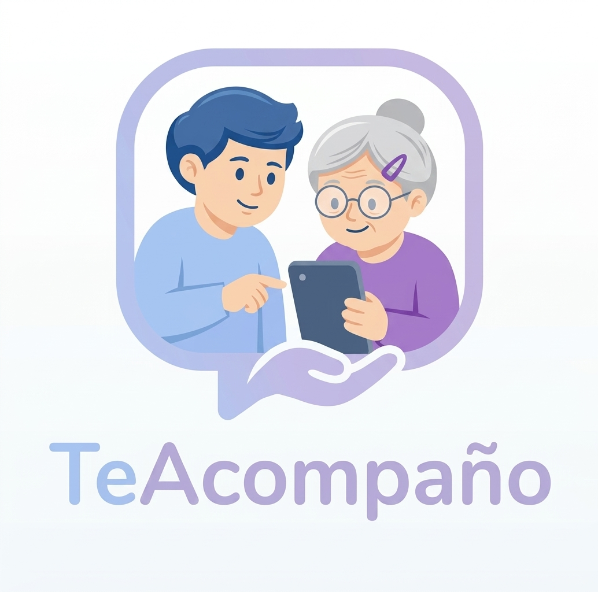

sobre nosotros
Sobre nosotros Abuelo Digital es un proyecto creado para acompañar a los adultos mayores en el aprendizaje y uso de la tecnología. Buscamos que puedan utilizar celulares, aplicaciones e internet de una manera fácil, segura y confiable. Nuestro propósito es reducir las dificultades que muchas personas mayores encuentran al acercarse a la tecnología, brindándoles orientación, paciencia y herramientas pensadas especialmente para ellos. Queremos que la tecnología sea una ayuda y no una dificultad.
nuestra app

Te Acompaño es una plataforma pensada para acercar la tecnología a los adultos mayores de manera amigable, paciente y sin complicaciones. Brindamos asistencia y soporte personalizado paso a paso para que aprender a usar celulares, aplicaciones y herramientas digitales sea un proceso sencillo y seguro. Nuestro objetivo es transformar la frustración en confianza, ayudando a las personas mayores a desenvolverse de forma autónoma en el entorno digital y a mantenerse siempre conectadas con lo que más quieren.
nuestros servicios
En Abuelo Digital ofrecemos una variedad de servicios diseñados para facilitar el aprendizaje y uso de la tecnología por parte de los adultos mayores. Nuestros servicios incluyen:
- Asesoramiento personalizado: Brindamos orientación individualizada para resolver dudas y dificultades específicas.
- Talleres y cursos: Organizamos sesiones educativas para enseñar el uso de dispositivos y aplicaciones.
- Soporte técnico: Ofrecemos asistencia para solucionar problemas técnicos y mantener los dispositivos en funcionamiento.
- Recursos educativos: Proporcionamos materiales didácticos y guías paso a paso para facilitar el aprendizaje.
ayudante teyra
Ayudante Teyra es un asistente virtual diseñado para brindar apoyo a nustros usuarios en el uso de la tecnología. Con Teyra, los adultos mayores pueden recibir ayuda inmediata y personalizada para resolver dudas, aprender nuevas habilidades digitales y mejorar su experiencia tecnológica. Teyra está disponible para responder preguntas, guiar en el uso de aplicaciones y ofrecer consejos prácticos para aprovechar al máximo los dispositivos y servicios digitales.